Recepty podle kategorií

Bruschetta
Itálie
1. Opečte plátky bagety.2. Potřete česnekem a pokapejte olivovým olejem.
3. Navrch dejte rajčata s bazalkou.

Spring Rolls
Vietnam
1. Nakrájejte brambory a cibuli, osmažte je.2. Smíchejte s vejci.
3. Smažte na pánvi dozlatova.
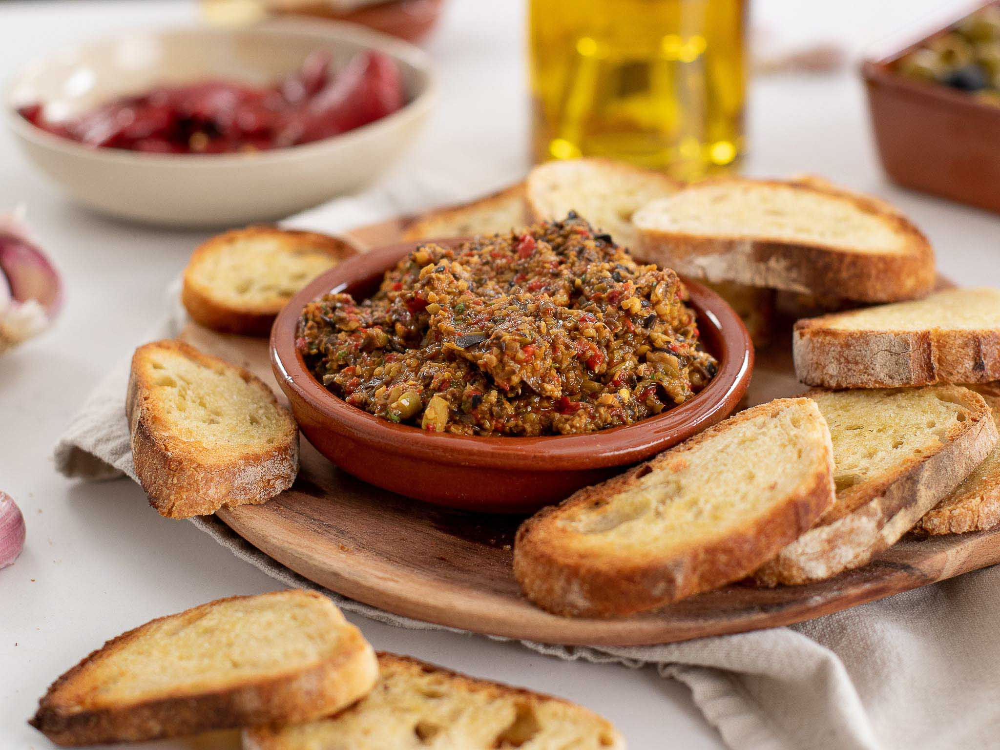
2. Přidejte olivový olej a citronovou šťávu.
3. Podávejte s pečivem jako pomazánku.
Tapenade
Francie
1. Rozmixujte černé olivy, kapary, ančovičky a česnek.2. Přidejte olivový olej a citronovou šťávu.
3. Podávejte s pečivem jako pomazánku.
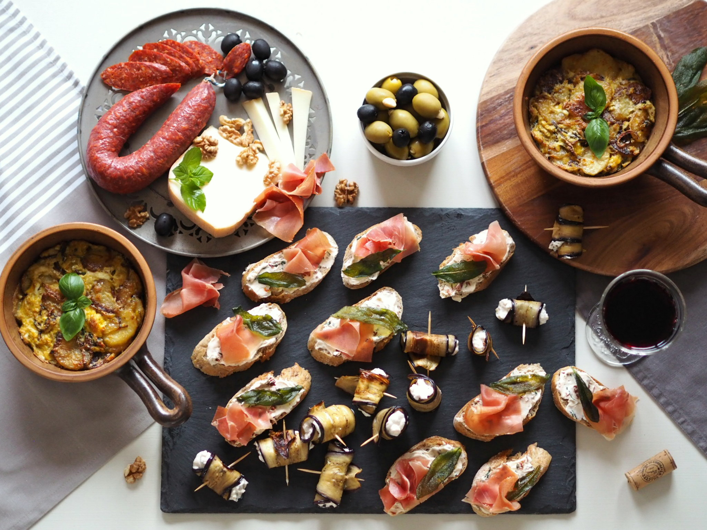
2. Připravte je jednoduše (grilování, smažení, nakládání).
3. Naservírujte na malé talířky jako chuťovky.
Tapas
Španělsko
1. Vyberte různé malé pokrmy – např. olivy, sýry, chorizo, krevety.2. Připravte je jednoduše (grilování, smažení, nakládání).
3. Naservírujte na malé talířky jako chuťovky.
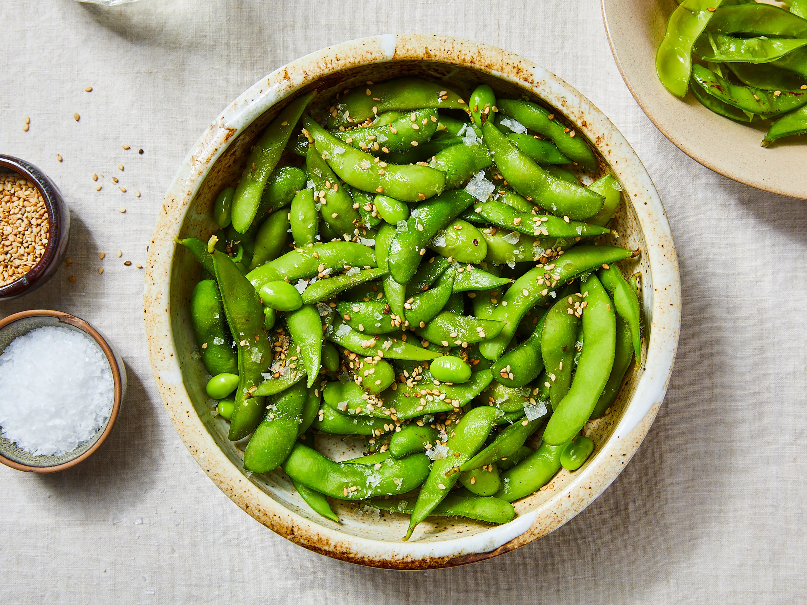
2. Sceďte a ihned posolte nebo přidejte sezamový olej.
3. Podávejte teplé nebo vlažné jako snack.
Edamame
Japonsko
1. Povařte edamame lusky v osolené vodě asi 5 minut.2. Sceďte a ihned posolte nebo přidejte sezamový olej.
3. Podávejte teplé nebo vlažné jako snack.
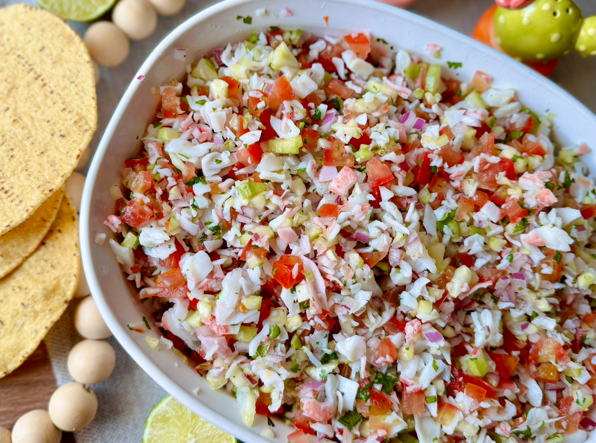
2. Zalejte limetkovou šťávou a nechte marinovat 15–30 minut.
3. Přidejte cibuli, koriandr, chilli a podávejte vychlazené.
Ceviche
Peru
1. Nakrájejte čerstvou rybu na kostičky.2. Zalejte limetkovou šťávou a nechte marinovat 15–30 minut.
3. Přidejte cibuli, koriandr, chilli a podávejte vychlazené.
Přehled předkrmů
| Název | Země | Hodnocení |
|---|---|---|
| Bruschetta | Itálie | ★★★★☆ |
| Spring Rolls | Vietnam | ★★★★★ |
| Tapenade | Francie | ★★★☆☆ |
| Gazpacho | Španělsko | ★★★★☆ |
| Edamame | Japonsko | ★★★☆☆ |
| Ceviche | Peru | ★★★★★ |
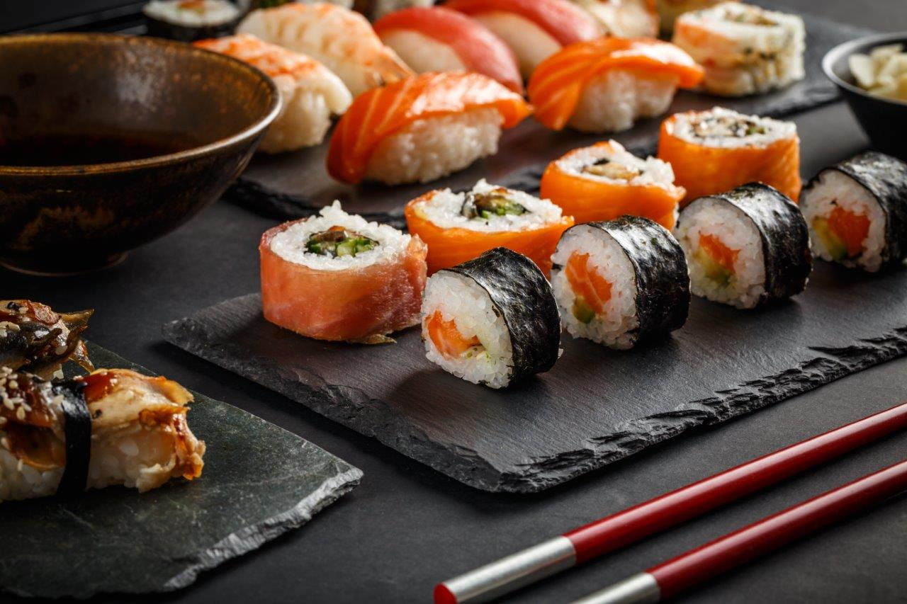
2. Připravte náplň (např. losos, avokádo).
3. Zaviňte do nori řasy a nakrájejte.
Sushi
Japonsko
1. Uvařte rýži na sushi.2. Připravte náplň (např. losos, avokádo).
3. Zaviňte do nori řasy a nakrájejte.
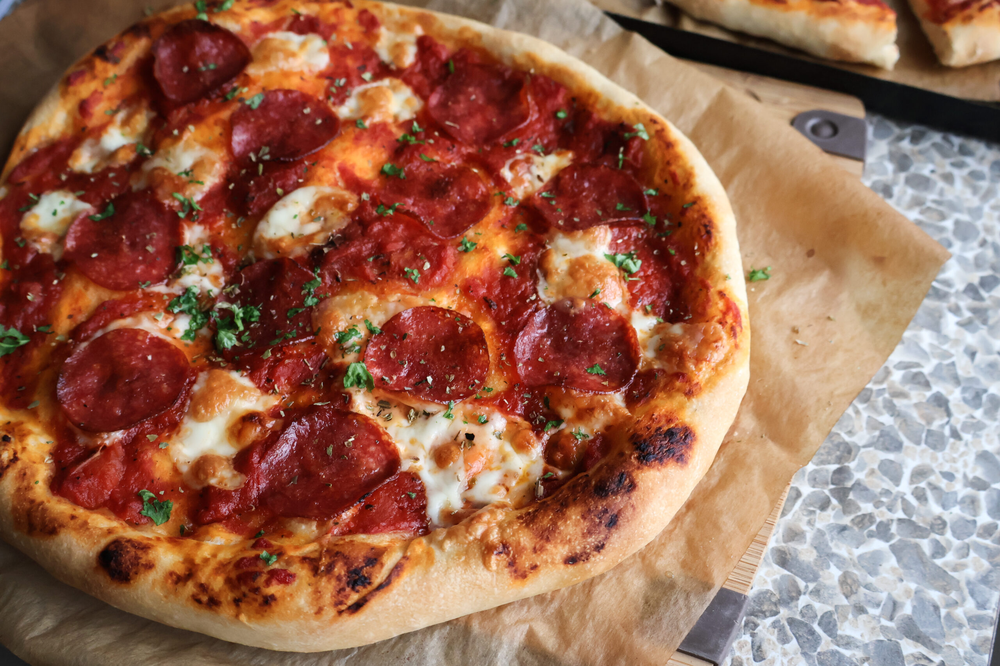
2. Potři rajčatovou omáčkou, přidej sýr a ingredience.
3. Peč 10–15 min na 220 °C, dokud těsto nezhnědne.
Pizza
Itálie
1. Rozválej těsto na tenkou placku.2. Potři rajčatovou omáčkou, přidej sýr a ingredience.
3. Peč 10–15 min na 220 °C, dokud těsto nezhnědne.
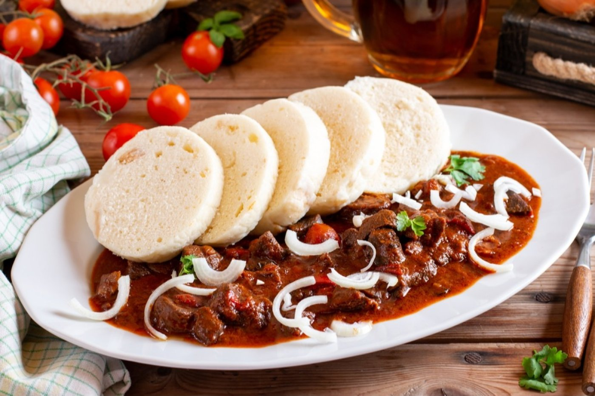
2. Osmahněte cibuli, přidejte maso, opečte ze všech stran.
3. Přidejte papriku, rajčatový protlak, vodu, vařte 1,5–2 hodiny.
Guláš
Česko
1. Nakrájejte hovězí maso na kostky.2. Osmahněte cibuli, přidejte maso, opečte ze všech stran.
3. Přidejte papriku, rajčatový protlak, vodu, vařte 1,5–2 hodiny.

Paella
Španělsko
1. Orestujte cibuli, česnek a papriku na oleji.2. Přidejte rýži, šafrán a maso/mořské plody.
3. Zalijte vývarem, vařte 20 min bez míchání.
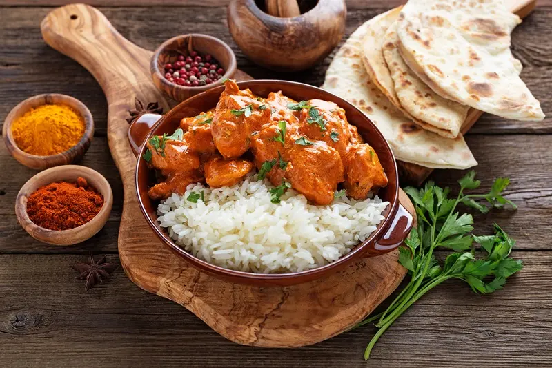
2. Opečte kuře dozlatova.
3. Připravte omáčku z rajčat a smetany, přidejte kuře, vařte.
Tikka Masala
Indie
1. Marinujte kuřecí kousky v jogurtu a koření 1 hodinu.2. Opečte kuře dozlatova.
3. Připravte omáčku z rajčat a smetany, přidejte kuře, vařte.

Tacos
Mexiko
1. Opečte mleté maso s kořením.2. Připravte cibuli, koriandr, limetku, salsu.
3. Naplňte tortilly masem a zeleninou, přidejte sýr/guacamole.
Přehled hlavních jídel
| Název | Země | Hodnocení |
|---|---|---|
| Sushi | Japonsko | ★★★★★ |
| Pizza | Itálie | ★★★★☆ |
| Guláš | Česko | ★★★★☆ |
| Paella | Španělsko | ★★★☆☆ |
| Tikka Masala | Indie | ★★★★★ |
| Tacos | Mexiko | ★★★★☆ |
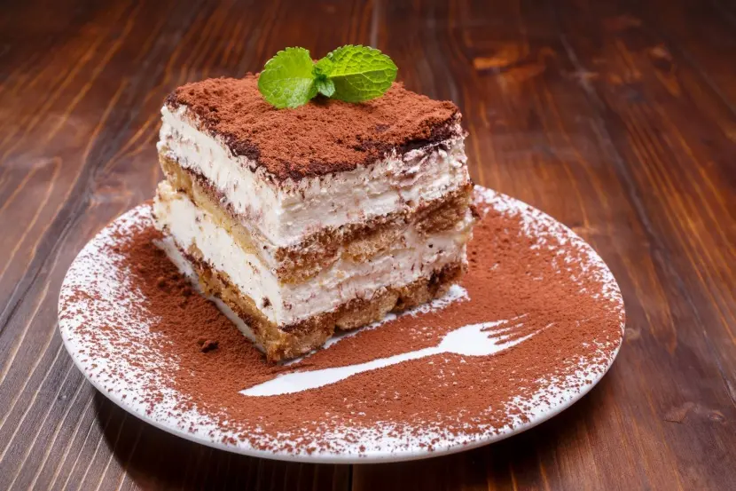
2. Namočte piškoty do kávy a skladejte do vrstvy.
3. Přidejte krém, posypte kakaem, dejte vychladit.
Tiramisu
Itálie
1. Smíchejte mascarpone, cukr a vejce.2. Namočte piškoty do kávy a skladejte do vrstvy.
3. Přidejte krém, posypte kakaem, dejte vychladit.
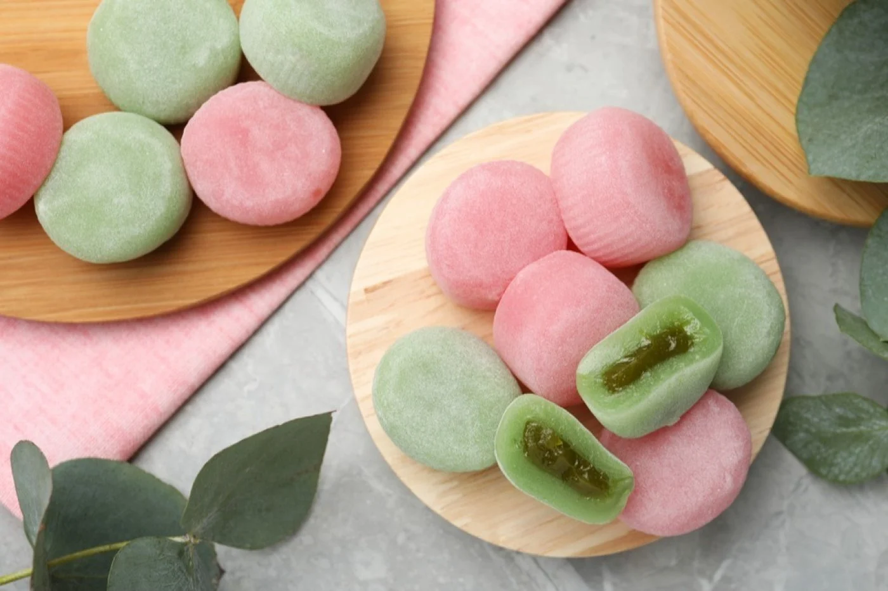
2. Vařte těsto v páře asi 20 minut, dokud nezhoustne.
3. Nechte vychladnout, poté tvarujte kuličky.
Mochi
Japonsko
1. Smíchejte rýžovou mouku s vodou a cukrem.2. Vařte těsto v páře asi 20 minut, dokud nezhoustne.
3. Nechte vychladnout, poté tvarujte kuličky.
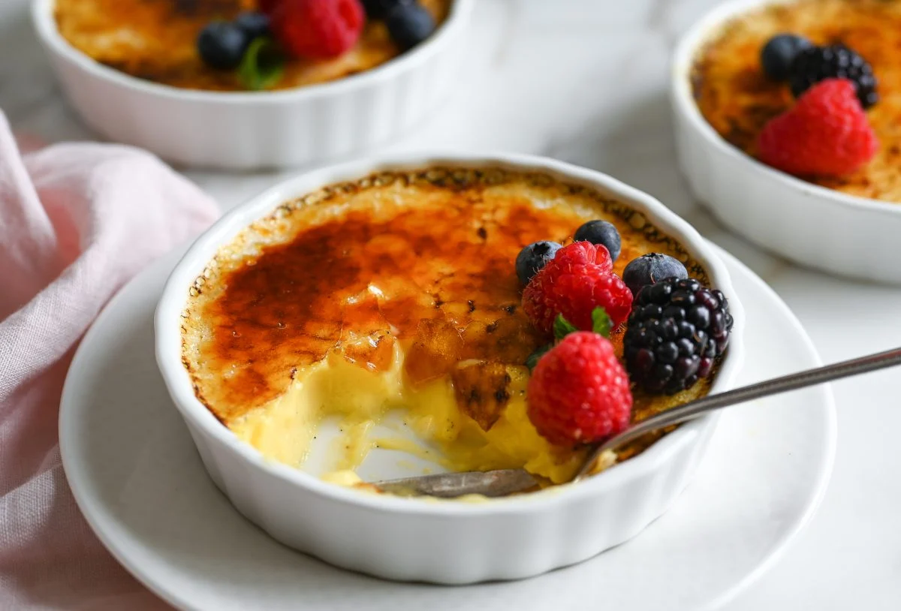
2. Pečte v zapékací misce ve vodní lázni.
3. Posypte cukrem, zkaramelizujte ho hořákem.
Crème brûlée
Francie
1. Smíchejte smetanu, žloutky a cukr.2. Pečte v zapékací misce ve vodní lázni.
3. Posypte cukrem, zkaramelizujte ho hořákem.
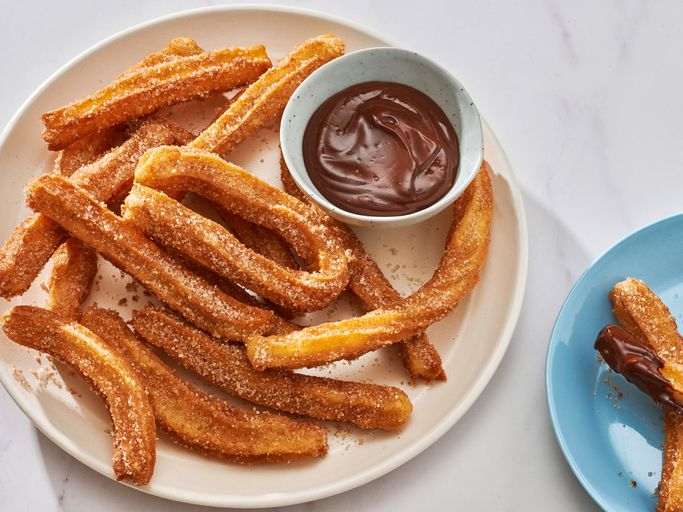
2. Vytlačte těsto do oleje a smažte dozlatova.
3. Obalte v cukru s skořicí, podávejte s čokoládou.
Churros
Španělsko
1. Smíchejte vodu, mouku a cukr, uvařte těsto.2. Vytlačte těsto do oleje a smažte dozlatova.
3. Obalte v cukru s skořicí, podávejte s čokoládou.

Baklava
Turecko
1. Pokládejte vrstvy tenkého těsta s nasekanými ořechy.2. Každou vrstvu potřete máslem, pečte do zlatova.
3. Polijte sladkým sirupem a nechte nasáknout.
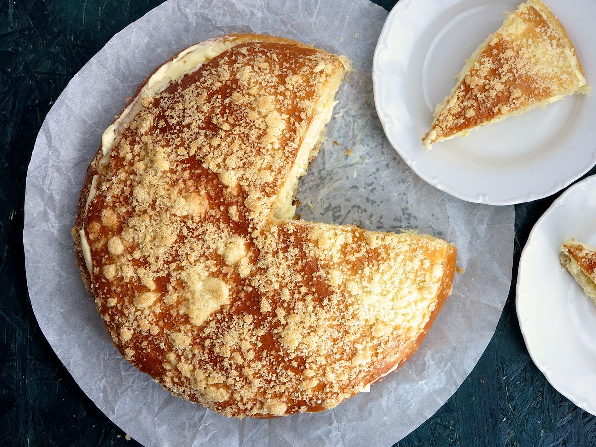
2. Naplňte ovocem nebo náplní podle chuti.
3. Pečte dozlatova, nechte vychladnout.
Koláč
Česko
1. Připravte těsto a rozválejte do formy.2. Naplňte ovocem nebo náplní podle chuti.
3. Pečte dozlatova, nechte vychladnout.
Přehled dezertů
| Název | Země | Hodnocení |
|---|---|---|
| Tiramisu | Itálie | ★★★★★ |
| Mochi | Japonsko | ★★★★☆ |
| Crème brûlée | Francie | ★★★★★ |
| Churros | Španělsko | ★★★☆☆ |
| Baklava | Turecko | ★★★★★ |
| Koláč | Česko | ★★★★☆ |
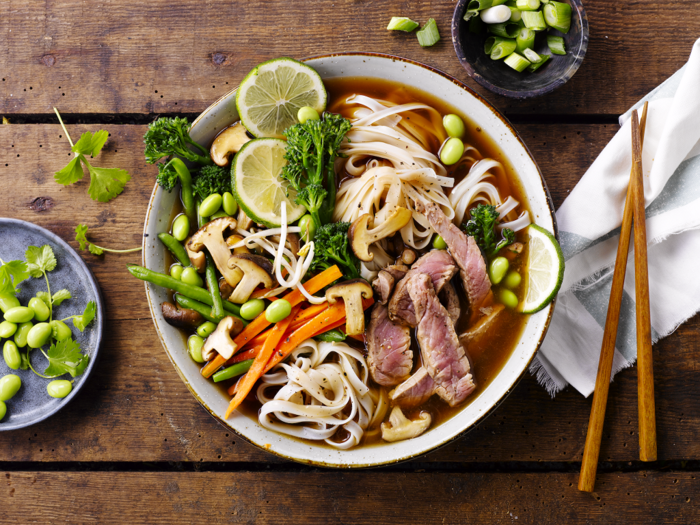
2. Připravte rýžové nudle, uvařte je zvlášť.
3. Do misky dejte nudle, nakrájené maso a zalijte horkým vývarem. Přidejte bylinky a limetku.
Pho
Vietnam
1. Uvařte vývar z hovězí kosti a koření (skořice, badyán).2. Připravte rýžové nudle, uvařte je zvlášť.
3. Do misky dejte nudle, nakrájené maso a zalijte horkým vývarem. Přidejte bylinky a limetku.
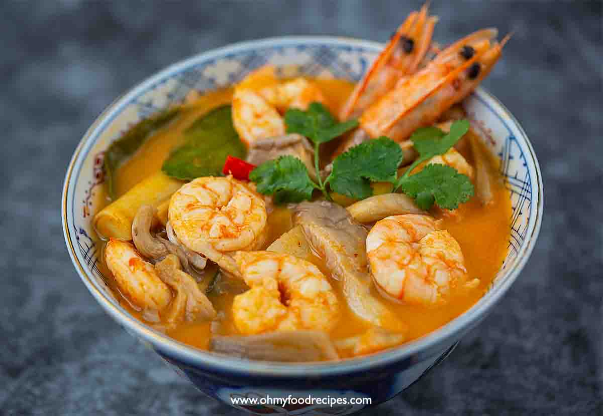
2. Přidejte krevety nebo kuře a houby.
3. Dochutťe limetkovou šťávou, rybí omáčkou a chilli.
Tom Yum
Thajsko
1. Přiveďte do varu vývar s citronovou trávou, galangalem a limetkovými listy.2. Přidejte krevety nebo kuře a houby.
3. Dochutťe limetkovou šťávou, rybí omáčkou a chilli.
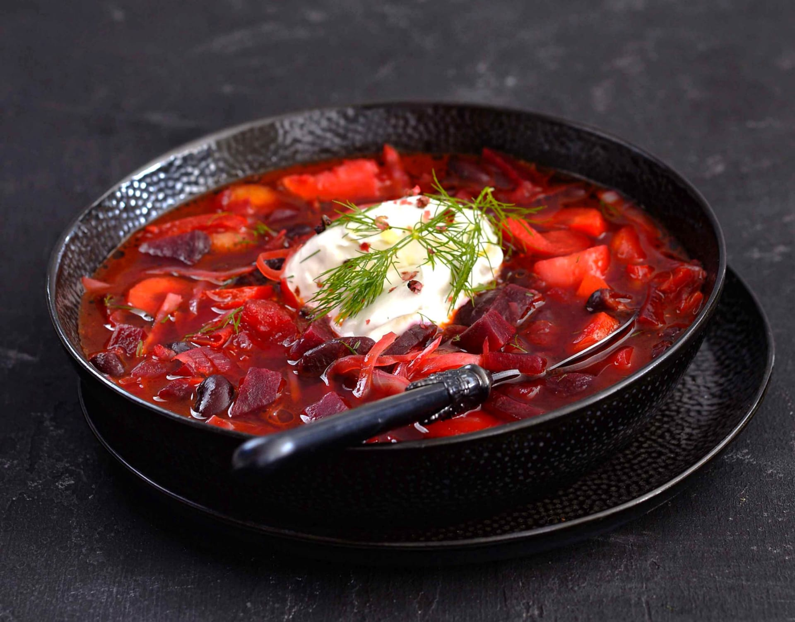
2. Přidejte nakrájenou řepu a vařte do měkka.
3. Podávejte s kysanou smetanou a čerstvým koprem.
Boršč
Ukrajina
1. Uvařte vývar z masa a zeleniny (řepa, zelí, mrkev).2. Přidejte nakrájenou řepu a vařte do měkka.
3. Podávejte s kysanou smetanou a čerstvým koprem.

Ramen
Japonsko
1. Uvařte vývar (kuřecí, vepřový nebo miso).2. Připravte nudle zvlášť.
3. Do misky dejte nudle, vývar, maso, vejce a zeleninu.
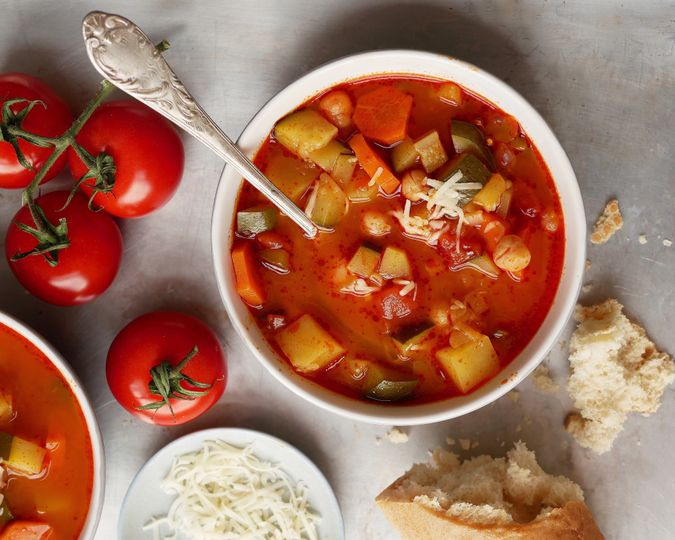
2. Přidejte vývar, fazole, rajčata a těstoviny.
3. Vařte do změknutí, dochuťte bylinkami.
Minestrone
Itálie
1. Orestujte cibuli, česnek, mrkev a celer.2. Přidejte vývar, fazole, rajčata a těstoviny.
3. Vařte do změknutí, dochuťte bylinkami.
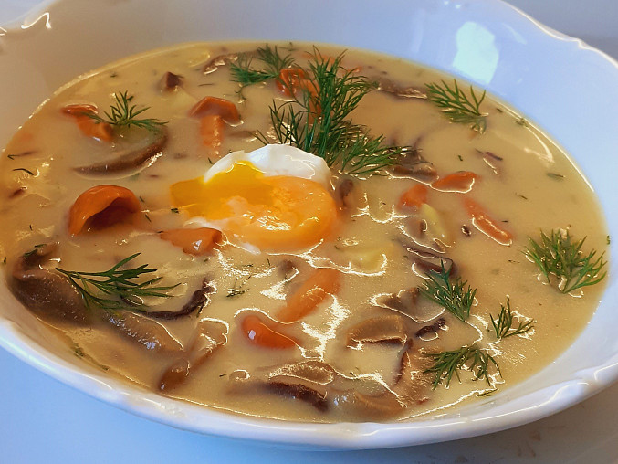
2. Přidejte kopr, smetanu a vajíčko.
3. Vařte do zhoustnutí a podávejte s chlebem.
Kulajda
Česko
1. Uvařte brambory a houby ve vývaru.2. Přidejte kopr, smetanu a vajíčko.
3. Vařte do zhoustnutí a podávejte s chlebem.
Přehled polévek
| Název | Země | Hodnocení |
|---|---|---|
| Pho | Vietnam | ★★★★★ |
| Tom Yum | Thajsko | ★★★★☆ |
| Boršč | Ukrajina | ★★★☆☆ |
| Ramen | Japonsko | ★★★★★ |
| Minestrone | Itálie | ★★★★☆ |
| Kulajda | Česko | ★★★☆☆ |